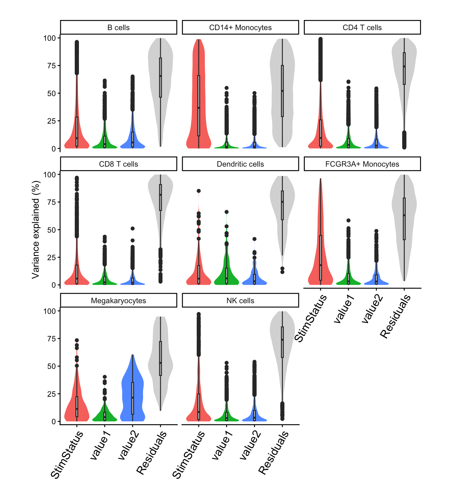

Modeling continuous cell-level covariates
Collapse using mean value for pseudobulk data
Developed by Gabriel Hoffman
Run on 2026-01-25 20:02:37
Source:vignettes/cell_covs.Rmd
cell_covs.RmdIntroduction
Since read counts are summed across cells in a pseudobulk approach, modeling continuous cell-level covariates also requires a collapsing step. Here we summarize the values of a variable from a set of cells using the mean, and store the value for each cell type. Including these variables in a regression formula uses the summarized values from the corresponding cell type.
We demonstrate this feature on a lightly modified analysis of PBMCs from 8 individuals stimulated with interferon-β (Kang, et al, 2018, Nature Biotech).
Standard processing
Here is the code from the main vignette:
library(dreamlet)
library(muscat)
library(ExperimentHub)
library(scater)
# Download data, specifying EH2259 for the Kang, et al study
eh <- ExperimentHub()
sce <- eh[["EH2259"]]
# only keep singlet cells with sufficient reads
sce <- sce[rowSums(counts(sce) > 0) > 0, ]
sce <- sce[, colData(sce)$multiplets == "singlet"]
# compute QC metrics
qc <- perCellQCMetrics(sce)
# remove cells with few or many detected genes
ol <- isOutlier(metric = qc$detected, nmads = 2, log = TRUE)
sce <- sce[, !ol]
# set variable indicating stimulated (stim) or control (ctrl)
sce$StimStatus <- sce$stimIn many datasets, continuous cell-level variables could be mapped reads, gene count, mitochondrial rate, etc. There are no continuous cell-level variables in this dataset, so we can simulate two from a normal distribution:
Pseudobulk
Now compute the pseudobulk using standard code:
sce$id <- paste0(sce$StimStatus, sce$ind)
# Create pseudobulk
pb <- aggregateToPseudoBulk(sce,
assay = "counts",
cluster_id = "cell",
sample_id = "id",
verbose = FALSE
)The means per variable, cell type, and sample are stored in the
pseudobulk SingleCellExperiment object:
metadata(pb)$aggr_means## # A tibble: 128 × 5
## # Groups: cell [8]
## cell id cluster value1 value2
## <fct> <fct> <dbl> <dbl> <dbl>
## 1 B cells ctrl101 3.96 -0.175 -0.0871
## 2 B cells ctrl1015 4.00 0.0386 0.0644
## 3 B cells ctrl1016 4 0.0154 0.0848
## 4 B cells ctrl1039 4.04 0.264 -0.396
## 5 B cells ctrl107 4 0.0313 -0.0824
## 6 B cells ctrl1244 4 -0.122 0.0432
## 7 B cells ctrl1256 4.01 0.00290 0.0317
## 8 B cells ctrl1488 4.02 -0.0284 0.0136
## 9 B cells stim101 4.09 -0.151 0.0541
## 10 B cells stim1015 4.06 -0.0415 0.0719
## # ℹ 118 more rowsAnalysis
Including these variables in a regression formula uses the summarized
values from the corresponding cell type. This happens behind the scenes,
so the user doesn’t need to distinguish bewteen sample-level variables
stored in colData(pb) and cell-level variables stored in
metadata(pb)$aggr_means.
Variance partition and hypothesis testing proceeds as ususal:
form <- ~ StimStatus + value1 + value2
# Normalize and apply voom/voomWithDreamWeights
res.proc <- processAssays(pb, form, min.count = 5)
# run variance partitioning analysis
vp.lst <- fitVarPart(res.proc, form)
# Summarize variance fractions genome-wide for each cell type
plotVarPart(vp.lst, label.angle = 60)
# Differential expression analysis within each assay
res.dl <- dreamlet(res.proc, form)
# dreamlet results include coefficients for value1 and value2
res.dl## class: dreamletResult
## assays(8): B cells CD14+ Monocytes ... Megakaryocytes NK cells
## Genes:
## min: 164
## max: 5262
## details(7): assay n_retain ... n_errors error_initial
## coefNames(4): (Intercept) StimStatusstim value1 value2Details
A variable in colData(sce) is handled according to if
the variable is
- continuous: the mean per donor/cell type is stored in
metadata(pb)$aggr_means - discrete
- [constant within each donor/cell type] it is stored in
colData(pb) - [varies within each donor/cell type] there is no good way to summarize it. The variable is dropped.
- [constant within each donor/cell type] it is stored in
Session Info
## R version 4.5.1 (2025-06-13)
## Platform: aarch64-apple-darwin23.6.0
## Running under: macOS Sonoma 14.7.1
##
## Matrix products: default
## BLAS/LAPACK: /opt/homebrew/Cellar/openblas/0.3.30/lib/libopenblasp-r0.3.30.dylib; LAPACK version 3.12.0
##
## locale:
## [1] en_US.UTF-8/en_US.UTF-8/en_US.UTF-8/C/en_US.UTF-8/en_US.UTF-8
##
## time zone: America/New_York
## tzcode source: internal
##
## attached base packages:
## [1] stats4 stats graphics grDevices utils datasets methods
## [8] base
##
## other attached packages:
## [1] muscData_1.24.0 scater_1.38.0
## [3] scuttle_1.20.0 ExperimentHub_3.0.0
## [5] AnnotationHub_4.0.0 BiocFileCache_3.0.0
## [7] dbplyr_2.5.1 muscat_1.24.0
## [9] dreamlet_1.9.1 SingleCellExperiment_1.32.0
## [11] SummarizedExperiment_1.40.0 Biobase_2.70.0
## [13] GenomicRanges_1.62.1 GenomeInfoDb_1.46.2
## [15] Seqinfo_1.0.0 IRanges_2.44.0
## [17] S4Vectors_0.48.0 BiocGenerics_0.56.0
## [19] generics_0.1.4 MatrixGenerics_1.22.0
## [21] matrixStats_1.5.0 variancePartition_1.40.2
## [23] BiocParallel_1.44.0 limma_3.66.0
## [25] ggplot2_4.0.1 BiocStyle_2.38.0
##
## loaded via a namespace (and not attached):
## [1] fs_1.6.6 bitops_1.0-9
## [3] httr_1.4.7 RColorBrewer_1.1-3
## [5] doParallel_1.0.17 Rgraphviz_2.54.0
## [7] numDeriv_2016.8-1.1 sctransform_0.4.3
## [9] tools_4.5.1 backports_1.5.0
## [11] utf8_1.2.6 R6_2.6.1
## [13] metafor_4.8-0 mgcv_1.9-4
## [15] GetoptLong_1.1.0 withr_3.0.2
## [17] gridExtra_2.3 prettyunits_1.2.0
## [19] fdrtool_1.2.18 cli_3.6.5
## [21] textshaping_1.0.4 sandwich_3.1-1
## [23] labeling_0.4.3 slam_0.1-55
## [25] sass_0.4.10 KEGGgraph_1.70.0
## [27] SQUAREM_2021.1 mvtnorm_1.3-3
## [29] S7_0.2.1 blme_1.0-7
## [31] pkgdown_2.2.0 mixsqp_0.3-54
## [33] systemfonts_1.3.1 zenith_1.12.0
## [35] dichromat_2.0-0.1 parallelly_1.46.1
## [37] invgamma_1.2 RSQLite_2.4.5
## [39] shape_1.4.6.1 gtools_3.9.5
## [41] dplyr_1.1.4 Matrix_1.7-4
## [43] metadat_1.4-0 ggbeeswarm_0.7.3
## [45] abind_1.4-8 lifecycle_1.0.5
## [47] yaml_2.3.12 edgeR_4.8.2
## [49] mathjaxr_2.0-0 gplots_3.3.0
## [51] SparseArray_1.10.8 grid_4.5.1
## [53] blob_1.3.0 crayon_1.5.3
## [55] lattice_0.22-7 beachmat_2.26.0
## [57] msigdbr_25.1.1 annotate_1.88.0
## [59] KEGGREST_1.50.0 pillar_1.11.1
## [61] knitr_1.51 ComplexHeatmap_2.26.0
## [63] rjson_0.2.23 boot_1.3-32
## [65] corpcor_1.6.10 future.apply_1.20.1
## [67] codetools_0.2-20 glue_1.8.0
## [69] data.table_1.18.0 vctrs_0.7.1
## [71] png_0.1-8 Rdpack_2.6.5
## [73] gtable_0.3.6 assertthat_0.2.1
## [75] cachem_1.1.0 zigg_0.0.2
## [77] xfun_0.56 rbibutils_2.4.1
## [79] S4Arrays_1.10.1 Rfast_2.1.5.2
## [81] reformulas_0.4.3.1 iterators_1.0.14
## [83] statmod_1.5.1 nlme_3.1-168
## [85] pbkrtest_0.5.5 bit64_4.6.0-1
## [87] filelock_1.0.3 progress_1.2.3
## [89] EnvStats_3.1.0 bslib_0.9.0
## [91] TMB_1.9.19 irlba_2.3.5.1
## [93] vipor_0.4.7 KernSmooth_2.23-26
## [95] otel_0.2.0 colorspace_2.1-2
## [97] rmeta_3.0 DBI_1.2.3
## [99] DESeq2_1.50.2 tidyselect_1.2.1
## [101] bit_4.6.0 compiler_4.5.1
## [103] curl_7.0.0 httr2_1.2.2
## [105] graph_1.88.1 BiocNeighbors_2.4.0
## [107] desc_1.4.3 DelayedArray_0.36.0
## [109] bookdown_0.46 scales_1.4.0
## [111] caTools_1.18.3 remaCor_0.0.20
## [113] rappdirs_0.3.4 stringr_1.6.0
## [115] digest_0.6.39 minqa_1.2.8
## [117] rmarkdown_2.30 aod_1.3.3
## [119] XVector_0.50.0 RhpcBLASctl_0.23-42
## [121] htmltools_0.5.9 pkgconfig_2.0.3
## [123] lme4_2.0-0 sparseMatrixStats_1.22.0
## [125] lpsymphony_1.38.0 mashr_0.2.79
## [127] fastmap_1.2.0 rlang_1.1.7
## [129] GlobalOptions_0.1.3 htmlwidgets_1.6.4
## [131] UCSC.utils_1.6.1 DelayedMatrixStats_1.32.0
## [133] farver_2.1.2 jquerylib_0.1.4
## [135] IHW_1.38.0 zoo_1.8-15
## [137] jsonlite_2.0.0 BiocSingular_1.26.1
## [139] RCurl_1.98-1.17 magrittr_2.0.4
## [141] Rcpp_1.1.1 viridis_0.6.5
## [143] babelgene_22.9 EnrichmentBrowser_2.40.0
## [145] stringi_1.8.7 MASS_7.3-65
## [147] plyr_1.8.9 listenv_0.10.0
## [149] parallel_4.5.1 ggrepel_0.9.6
## [151] Biostrings_2.78.0 splines_4.5.1
## [153] hms_1.1.4 circlize_0.4.17
## [155] locfit_1.5-9.12 ScaledMatrix_1.18.0
## [157] reshape2_1.4.5 BiocVersion_3.22.0
## [159] XML_3.99-0.20 evaluate_1.0.5
## [161] RcppParallel_5.1.11-1 BiocManager_1.30.27
## [163] nloptr_2.2.1 foreach_1.5.2
## [165] tidyr_1.3.2 purrr_1.2.1
## [167] future_1.69.0 clue_0.3-66
## [169] scattermore_1.2 ashr_2.2-63
## [171] rsvd_1.0.5 broom_1.0.11
## [173] xtable_1.8-4 fANCOVA_0.6-1
## [175] viridisLite_0.4.2 ragg_1.5.0
## [177] truncnorm_1.0-9 tibble_3.3.1
## [179] lmerTest_3.2-0 glmmTMB_1.1.14
## [181] memoise_2.0.1 beeswarm_0.4.0
## [183] AnnotationDbi_1.72.0 cluster_2.1.8.1
## [185] globals_0.18.0 GSEABase_1.72.0